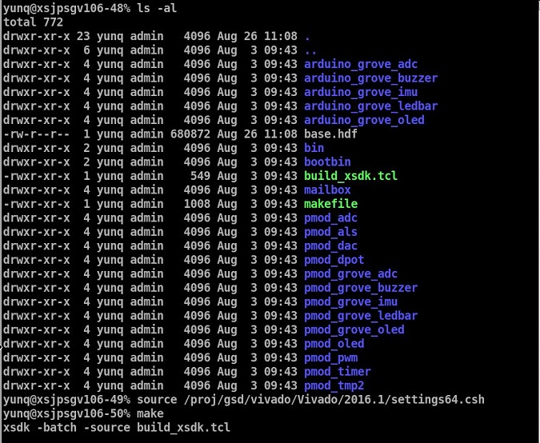
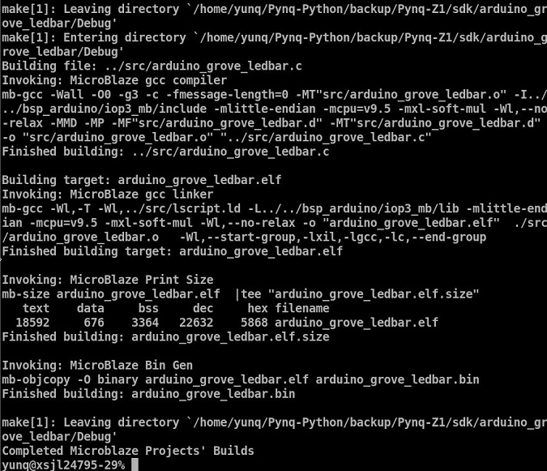
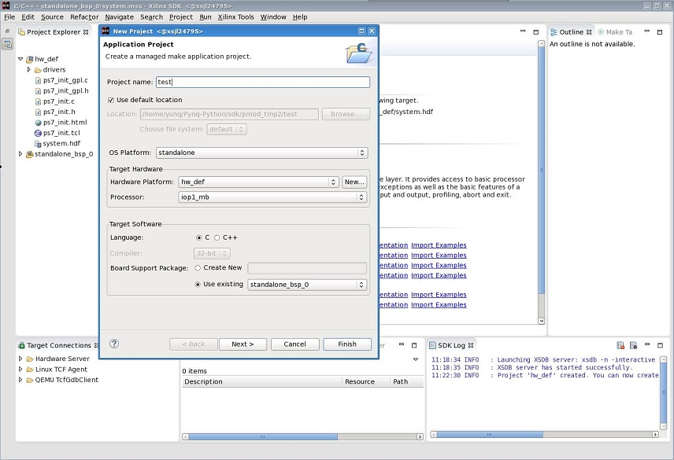

IO Processors: Writing your own software¶
There are a number of steps required before you can start writing your own software for an IOP (IO Processor). This document will describe the IOP architecture, and how to set up and build the required software projects to allow you to write your own application for the MicroBlaze inside an IOP. Xilinx SDK projects can be created manually using the SDK GUI, or software can be built using a Makefile flow.
IO Processors¶
As seen previously, an IOP can be used as a flexible controller for different types of external peripherals. The ARM Cortex-A9 is an application processor, which runs Pynq and Jupyter notebook on a Linux OS. This scenario is not well suited to real-time applications, which is a common requirement for an embedded systems. In the base overlay there are three IOPs. As well as acting as a flexible controller, an IOP can be used as dedicated real-time controller.
IOPs can also be used standalone to offload some processing from the main processor. However, note that the MicroBlaze processor inside an IOP in the base overlay is running at 100 MHz, compared to the Dual-Core ARM Cortex-A9 running at 650 MHz. The clock speed, and different processor architectures and features should be taken into account when offloading pure application code. e.g. Vector processing on the ARM Cortex-A9 Neon processing unit will be much more efficient than running on the MicroBlaze. The MicroBlaze is most appropriate for low-level, background, or real-time applications.
There are two types of IOP, a Pmod IOP and an Arduino IOP.
Previous sections showed the similarities between the Pmod IOP and Arduino IOP. Each IOP contains a Xilinx MicroBlaze processor, a Debug module, and one or more of the following functional units and interface peripherals:
The Arduino also includes a UART, and XADC.
The interface peripherals are connected to a Configurable Switch. The switch is different for the Pmod and the Arduino IOPs. The Pmod configurable switch connects to a Pmod port, and the Arduino configurable switch connects to an Arduino interface connector.
Pmod IOP:

The IOP’s configurable switch can be used to route signals between the physical interface, and the available internal peripherals in the IOP sub-system.
Software requirements¶
A MicroBlaze cross-compiler is required to build software for the MicroBlaze inside an IOP. Xilinx SDK contains the MicroBlaze cross-compiler and was used to build all Pmod device drivers released with Pynq and is available for free. It should be noted that Pynq ships with precompiled IOP executables to support various peripherals (see Pynq Modules), but that full source code is available from the proejct GitHub. Xilinx software is only needed if you intend to build your own IOP applications/peripheral drivers. A free, fully fuctional, version of the Xilinx tools is available for Pynq if required (see the free Xilinx Vivado WebPack for more details).
The current Pynq release is built using Vivado and SDK 2016.1. it is recommended to use the same version to rebuild existing Vivado and SDK projects. If you only intend to build software, you will only need to install SDK. The full Vivado and SDK installation is only required to design new overlays.
Download Xilinx Vivado and SDK 2016.1
You can use the Vivado HLx Web Install Client and select SDK and/or Vivado during the installation.
Pynq also support building of bitstreams from SDSoC. SDSoC is currently a seperate download and installation from the main Vivado/SDK software.
Compiling projects¶
Software executables run on the MicroBlaze inside the IOP. Code for the MicroBlaze can be written in C or C++ and compiled using the Xilinx SDK (Software Development Kit).
You can pull or clone the Pynq GitHub repository, and all the driver source and project files can be found in <GitHub Repository>\Pynq-Z1\sdk, (Where <GitHub Repository> is the location of the PYNQ repository).
These projects are considered SDK Application projects and contain the top level application. Each SDK project requires a BSP project (Board Suppoprt Package), and a hardware platform project. See below for more details. Software libraries are included in a Board Support Package (BSP) project, and the BSP is linked to from the application project.
All Application projects can be compiled from the command line using Makefiles, or imported into the SDK GUI.
You can also use existing projects as a starting point to create your own project.
HDF file¶
Before an Application project and BSP can be created or compiled in SDK, a Hardware Platform project is required. A Hardware Platform defines the peripherals in the IOP subsystem, and the memory map of the system, and is used by the BSP to build software libraries to support the underlying hardware.
A Hardware Description File (.hdf), created by Vivado, is used to create the Hardware Platfrom project in SDK.
A precompiled .hdf file is provided, so it is not necessary to run Vivado to generate a .hdf file:
<GitHub Repository>/Pynq-Z1/sdk/
Board Support Package¶
The BSP (Board Support Package) contains software libraries and drivers to support the underlying peripherals in the system.
A BSP must be linked to a Hardware Platform, as this is where the peripherals in the system are defined. An Application Project is then linked to a BSP, and can use the libraries available in the BSP.
Building the projects¶
A Makefile to automatically create and build the Hardware Platform and the BSP can be found in the same location as the .hdf file.
<GitHub Repository>/Pynq-Z1/sdk/makefile
Application projects for peripherals that ship with Pynq (e.g. Pmods and Grove peripherals) can also be found in the same location. Each project is contained in a separate folder.
The Makefile uses the .hdf file to create the Hardware Platform. The BSP can then be created. The application projects will also be compiled automatically as part of this process.
The Makefile requires SDK to be installed, and can be run from Windows, or Linux.
To run make from Windows, open SDK, and choose a temporary workspace (make sure this path is external to the downloaded GitHub repository). From the Xilinx Tools menu, select Launch Shell
{kind=link}
In Linux, open a terminal, and source the SDK tools.
From either the Windows Shell, or the Linux terminal, navigate to the sdk folder in your local copy of the GitHub repository:
 cd to<GitHub Repository>/Pynq-Z1/sdkand runmake
{kind=link}
{kind=link}
This will create the Hardware Platform Project (hw_def), and the Board Support Package (bsp), and then link and build all the application projects.
If you examine the Makefile, you can see how the MBBINS variable at the top of the makefile is used to compile the application projects. If you want to add your own custom project to the build process, you need to add the project name to the MBBINS variable, and save the project in the same location as the other application projects.
Individual projects can be built by navigating to the <project directory>/Debug and running make.
Binary files¶
Compiling code produces an executable file (.elf) which needs to be converted to binary format (.bin) to be downloaded to, and run on, an IOP.
A .bin file can be generated from a .elf by running the following command from the SDK shell:
mb-objcopy -O binary <inputfile>.elf <outputfile>.bin
This is done automatically by the makefile for the existing application projects. The makefile will also copy all .bin files into the <GitHub Repository>/Pynq-Z1/sdk/bin folder.
Creating your own Application project¶
Using the Makefile flow, you can use an existing project as a starting point for your own project.
Copy and rename the project, and modify or replace the .c file in the src/ with your C code. The generated .bin file will have the same base name as your C file.
e.g. if your C code is my_peripheral.c, the generated .elf and .bin will be my_peripheral.elf and my_peripheral.bin.
We encourage the following naming convention for applications <pmod|grove|arduino>_<peripheral>
You will need to update references from the old project name to your new project name in <project directory>/Debug/makefile and <project directory>/Debug/src/subdir.mk
If you want your project to build in the main Makefile, you should also append the .bin name of your project to the MBBINS variable at the top of the makefile.
If you are using the SDK GUI, you can import the Hardware Platform, BSP, and any application projects into your SDK workspace.
{kind=link}
The SDK GUI can be used to build and debug your code.
IOP Memory¶
The IOP instruction and data memory is implemented in a dual port Block RAM, with one port connected to the IOP, and the other to the ARM processor. This allows an executable binary file to be written from the ARM (i.e. the Pynq environment) to the IOP instruction memory. The IOP can also be reset from Pynq, allowing the IOP to start executing the new program. The IOP data memory is also used as a mailbox for communication and data exchanges between the Pynq environment and the IOP.
Memory map¶
The IOP memory is 64KB ‘’(0x10000)’’ of shared data and instruction memory. Instruction memory for the IOP starts at address 0x0. Pynq and the application running on the IOP can write to anywhere in the shared memory space (although care should be taken not to write to the instruction memory unintentionally as this will corrupt the running application).
When building the MicroBlaze project, the compiler will only ensure that the application and allocated stack and heap fit into the BRAM. For communication between the ARM and the MicroBlaze, a part of the shared memory space must also be reserved within the MicroBlaze address space.
There is no memory management in the IOP. You must ensure the application, including stack and heap, do not overflow into the defined data area. Remember that declaring a stack and heap size only allocates space to the stack and heap. No boundary is created, so if sufficient space was not allocated, the stack and heap may overflow.
If you need to modify the stack and heap for an application, the linker script can be found in the <project>/src/ directory.
It is recommended to follow the convention for data communication between the two processors via MAILBOX. These MAILBOX values are defined in the header file.
Instruction and data memory start 0x0 Instruction and data memory size 0xf000 Shared mailbox memory start 0xf000 Shared mailbox memory size 0x1000 Shared mailbox Command Address 0xfffc
The following example explains how Python could initiate a read from a peripheral connected to an IOP.
- Python writes a read command (e.g. 0x3) to the mailbox command address (0xfffc).
- MicroBlaze application checks the command addres, and reads and decodes the command.
- MicroBlaze performs a read from the peripheral and places the data at the mailbox base address (0xf000).
- Micboblaze writes 0x0 to the mailbox command address (0xfffc) to confirm transaction is complete.
- Python checks the command address (0xfffc), and sees that the MicroBlaze has written 0x0, indicating the read is complete, and data is available.
- Python reads the data in the mailbox base address (0xf000), completing the read.
Controlling the Pmod IOP Switch¶
There are 8 data pins on a Pmod port, that can be connected to any of 16 internal peripheral pins (8x GPIO, 2x SPI, 4x IIC, 2x Timer).
Each pin can be configured by writing a 4 bit value to the corresponding place in the IOP Switch configuration register.
The following function, part of the provided pmod_io_switch_v1_0 driver (pmod.h) can be used to configure the switch.
void config_pmod_switch(char pin0, char pin1, char pin2, char pin3, char pin4, \
char pin5, char pin6, char pin7);
While each parameter is a “char” only the lower 4-bits are currently used to configure each pin.
Switch mappings used for IOP Switch configuration:
| Pin | Value |
|---|---|
| GPIO_0 | 0x0 |
| GPIO_1 | 0x1 |
| GPIO_2 | 0x2 |
| GPIO_3 | 0x3 |
| GPIO_4 | 0x4 |
| GPIO_5 | 0x5 |
| GPIO_6 | 0x6 |
| GPIO_7 | 0x7 |
| SCL | 0x8 |
| SDA | 0x9 |
| SPICLK | 0xa |
| MISO | 0xb |
| MOSI | 0xc |
| SS | 0xd |
| PWM | 0xe |
| TIMER | 0xf |
For example, to connect the physical pins GPIO 0-7 to the internal GPIO_0 - GPIO_7:
config_pmod_switch(GPIO_0, GPIO_1, GPIO_2, GPIO_3, GPIO_4, \
GPIO_5, GPIO_6, GPIO_7);
From Python all the constants and addresses for the IOP can be found in:
<GitHub Repository>/python/pynq/iop/iop_const.py
Note that if two or more pins are connected to the same signal, the pins are OR’d together internally. This is not recommended and should not be done unintentionally.
Any application that uses the Pmod driver should also call pmod_init() at the beginning of the application.
Running code on different IOPs¶
The shared memory is the only connection between the ARM and the IOPs in the base overlay. The shared memory of a MicroBlaze is mapped to the ARM address space. Some example mappings are shown below to highlight the address translation between MicroBlaze and ARM’s memory spaces.
| IOP Base Address | MicroBlaze Address Space | ARM Equivalent Address Space |
|---|---|---|
| 0x4000_0000 | 0x0000_0000 - 0x0000_ffff | 0x4000_0000 - 0x4000_ffff |
| 0x4200_0000 | 0x0000_0000 - 0x0000_ffff | 0x4200_0000 - 0x4200_ffff |
| 0x4400_0000 | 0x0000_0000 - 0x0000_ffff | 0x4400_0000 - 0x4400_ffff |
Note that each MicroBlaze has the same range for its address space. However, the location of each IOPs address space in the ARM memory map is different for each IOP. As the address space is the same for each IOP, any binary compiled for one Pmod IOP will work on another Pmod IOP.
e.g. if IOP1 exists at 0x4000_0000, and IOP2 (a second instance of an IOP) exists at 0x4200_0000, the same binary can run on IOP1 by writing the binary from python to the 0x4000_0000 address space, and on IOP2 by writing to the 0x4200_0000.
IOP Application Example¶
Taking Pmod ALS as an example IOP driver (used to control the PMOD light sensor), first open the pmod_als.c file:
<GitHub Repository>/Pynq-Z1/sdk/pmod_als/src/pmod_als.c
Note that the pmod.h header file is included.
Some COMMANDS are defined by the user. These values can be chosen to be any value, but must correspond with the Python part of the driver.
By convention, 0x0 is reserved for no command/idle/acknowledge, and IOP commands can be any non-zero value.
The ALS peripheral has as SPI interface. Note the user defined function get_sample() which calls an SPI function spi_transfer() call defined in pmod.h.
In main() notice config_pmod_switch() is called to initialize the switch with a static configuration. This means that if you want to use this code with a different pin configuration, the C code must be modified and recompiled.
Next, the while(1) loop is entered. In this loop the IOP continually checks the MAILBOX_CMD_ADDR for a non-zero command. Once a command is received from Python, the command is decoded, and executed.
Taking the first case, reading a single value:
case READ_SINGLE_VALUE:
MAILBOX_DATA(0) = get_sample();
MAILBOX_CMD_ADDR = 0x0;
get_sample() is called and a value returned to the first position (0) of the MAILBOX_DATA.
MAILBOX_CMD_ADDR is reset to zero to acknowledge to the ARM processor that the operation is complete and data is available in the mailbox.
Examine Python Code¶
With the IOP Driver written, the Python class can be built that will communicate with that IOP.
<GitHub Repository>/python/pynq/iop/pmod_als.py
First the MMIO, request_iop, iop_const, PMODA and PMODB are imported.
import time
from pynq import MMIO
from pynq.iop import request_iop
from pynq.iop import iop_const
from pynq.iop import PMODA
from pynq.iop import PMODB
ALS_PROGRAM = "pmod_als.bin"
The MicroBlaze binary for the IOP is also declared. This is the application executable, and will be loaded into the IOP instruction memory.
The ALS class and an initialization method are defined:
class Pmod_ALS(object):
def __init__(self, if_id):
The initialization function for the module requires an IOP index. For Grove peripherals and the StickIt connector, the StickIt port number can also be used for initialization. The __init__ is called when a module is instantiated. e.g. from Python:
from pynq.pmods import Pmod_ALS
als = Pmod_ALS(PMODB)
Looking further into the initialization method, the _iop.request_iop() call instantiates an instance of an IOP on the specified pmod_id and loads the MicroBlaze executable (ALS_PROGRAM) into the instruction memory of the appropriate MicroBlaze.
self.iop = request_iop(if_id, PMOD_ALS_PROGRAM)
An MMIO class is also instantiated to enable read and write to the shared memory.
self.mmio = self.iop.mmio
Finally, the iop.start() call pulls the IOP out of reset. After this, the IOP will be running the als.bin executable.
self.iop.start()
Example of Python Class Runtime Methods¶
The read method in the Pmod_ALS class will simply read an ALS sample and return that value to the caller. The following steps demonstrate a Python to MicroBlaze read transaction specfic to the ALS class.
def read(self):
First, the comand is written to the MicroBlaze shared memory using mmio.write(). In this case the value 0x3 represents a read command. This value is user defined in the Python code, and must match the value the C program running on the IOP expects for the same function.
self.mmio.write(iop_const.MAILBOX_OFFSET+
iop_const.MAILBOX_PY2IOP_CMD_OFFSET, 3)
When the IOP is finished, it will write 0x0 to the command area. The Python code now uses mmio.read() to check if the command is still pending (in this case, when the 0x3 value is still present at the CMD_OFFSET). While the command is pending, the Python class blocks.
while (self.mmio.read(iop_const.MAILBOX_OFFSET+
iop_const.MAILBOX_PY2IOP_CMD_OFFSET) == 3):
pass
Once the command is no longer 0x3, i.e. the acknowledge has been received, the result is read from the DATA area of the shared memory MAILBOX_OFFSET using mmio.read().
return self.mmio.read(iop_const.MAILBOX_OFFSET)
Notice the iop_const values are used in these function calls, values that are predefined in iop_const.py.